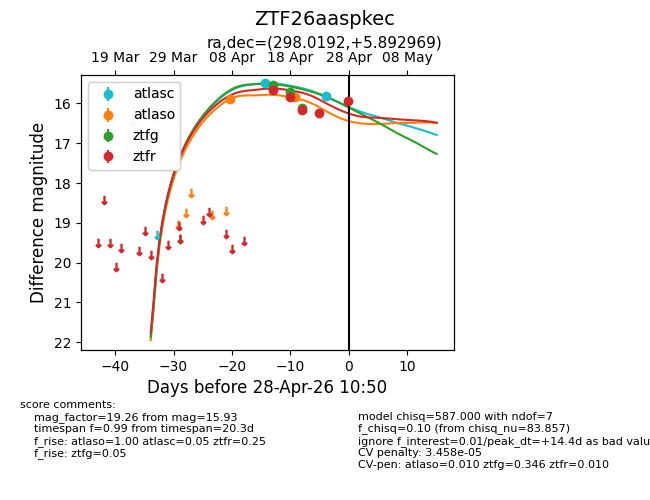
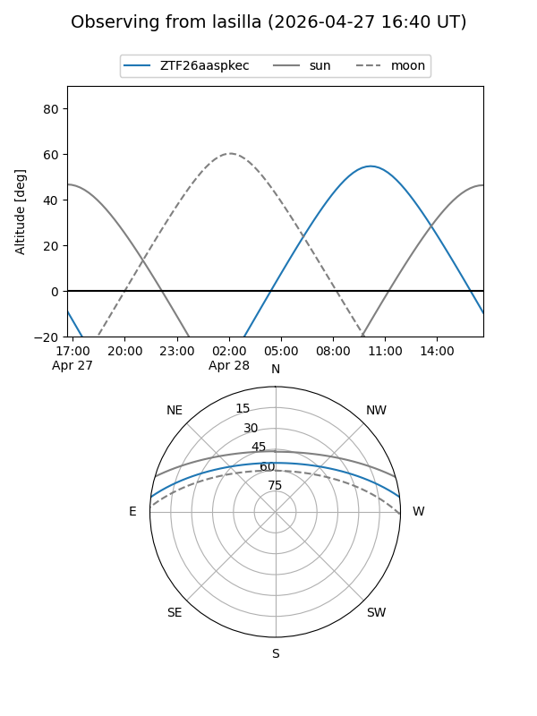
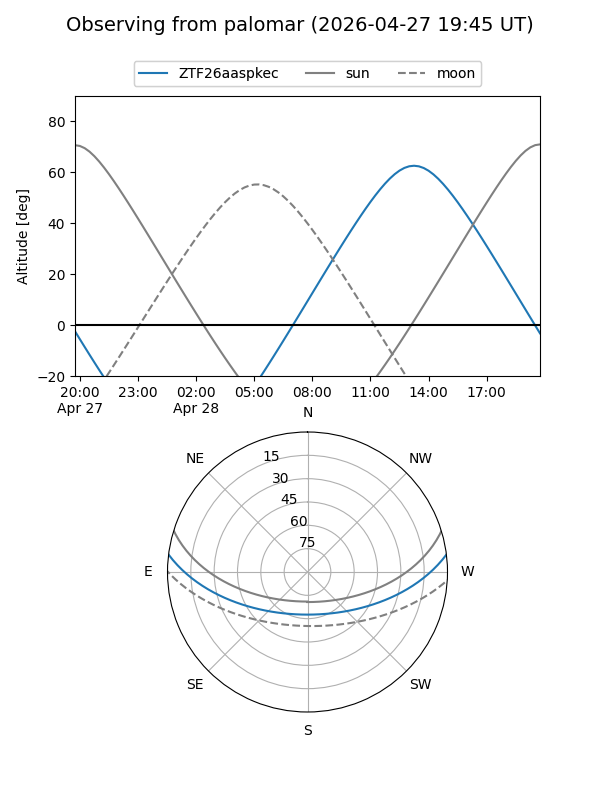
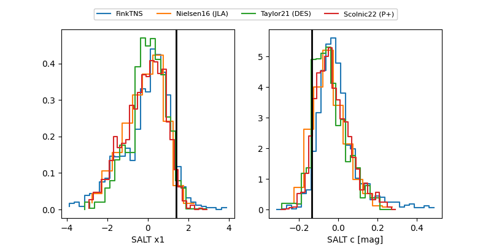

ZTF26aaspkec
Target ZTF26aaspkec at 2026-04-28 10:52
Aliases and brokers:
FINK: link
Lasair: link
ALeRCE: link
alt names
ZTF26aaspkec (ztf,fink_ztf)
Coordinates:
equatorial (ra, dec) = 298.0192,+5.89297
equatorial (HMS+DMS) = 19:52:04.62,+05:53:34.69
galactic (l, b) = (45.2692,-10.64341)
Flags:
likely cv
Photometry:
last atlasc=15.80, atlaso=15.84, ztfg=16.11, ztfr=15.93
2 atlasc, 2 atlaso, 3 ztfg, 5 ztfr detections
Lightcurve

Visibility


Additional plots
